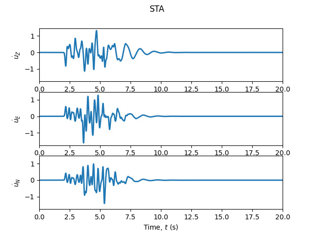

Home
ShakerMaker is a Python framework for computing earthquake ground motions using the frequency-wavenumber (FK) method. It provides a complete pipeline, from crustal model definition and earthquake source specification to ground motion computation and export in HDF5 and NumPy formats. Computations are parallelized with MPI and scale from personal workstations to High-Performance Computing (HPC).
The FK method is implemented in Fortran (originally from
L. Zhu, with several
modifications) and interfaced with Python through f2py wrappers. Classes are
built on top of this wrapper to simplify common modeling tasks: crustal model
specification, source faults (from simple point sources to full kinematic
rupture specifications), single recording stations, grids and DRM station
arrays. Filtering and simple plotting tools ease model setup.
ShakerMaker also includes the Finite Fault Stochastic Process (FFSP) tool (Fortran), which idealizes a fault of a given area and event magnitude with specific strike, dip, and rake. Graphical functions visualize the computed metrics and the statistics of the stochastic space used to select the best model.
ShakerMaker also bundles a convenience reader for the CRUST 1.0 global crustal model (Laske et al., 2013) — a 1° × 1° grid of 9 layers (water, ice, sediments, crystalline crust, mantle). Given any latitude/longitude, it returns the local crustal column and emits a ready-to-paste CrustModel snippet, giving you a sensible starting velocity profile anywhere on Earth. It ships inside the package under shakermaker/crust1/, so the data travels with pip install and is importable as from shakermaker.crust1 import Crust1.
Built on a Fortran FK core
Motion traces are computed by pairing all sources with all receivers, parallelized with MPI, so ShakerMaker runs on a laptop or on a large cluster, unchanged.
Key features¶
- FK ground motion synthesis, full-wavefield Green's functions in 1D layered viscoelastic media
- Domain Reduction Method (DRM), boundary motions for sub-domain simulations; export directly to HDF5 (see H5DRMLoadPattern)
- Stochastic finite fault ruptures (FFSP), spatially-correlated slip distributions, magnitude–area scaling, configurable random seeds
- Source time functions, Brune, Gaussian, Dirac, Discrete, SRF2
- Pre-packaged crustal models, LOH.1 (SCEC), Southern California, AbellThesis; extendable
- Multiple receiver geometries, stations, surface grids, DRM boxes, point clouds
- MPI parallelism,
mpi4pyover source–receiver pairs - Filtering and plotting, low/high-pass filters,
ZENTPlot,StationPlot,SourcePlot
How it works¶
The FK method computes the complete seismic wavefield for a point source embedded in a 1D layered halfspace. ShakerMaker organises the workflow into three components:
| Component | Role |
|---|---|
| CrustModel | 1D velocity structure: layer thickness, Vp, Vs, density, and Q factors |
| Source | PointSource (single point, strike/dip/rake) or FaultSource (extended fault), optionally driven by a SourceTimeFunction |
| Receiver | Station (single point), StationList, DRMBox, SurfaceGrid, or PointCloudDRMReceiver |
These three combine into a ShakerMaker instance and dispatch either via
.run() (direct, pair-by-pair) or through the three-stage pipeline
.gen_pairs() → .compute_gf() → .run_fast() — both MPI-parallel. The
orchestrator .run_nearest(stage=...) drives the three stages from a single
call (running any of stages 0, 1, 2, '0_1', or 'all'), building a
database of Green's functions that exploits the cylindrical symmetry of the
elastic wave-propagation problem: source–receiver pairs are grouped under
distance tolerances (delta_h, delta_v_rec, delta_v_src), so a Green's
function computed for one pair is reused for any other pair close enough,
avoiding redundant FK evaluations. Results are stored in each Station and
optionally written to disk.
A minimal simulation¶
The SCEC LOH.1 crust, a strike-slip point source at 2 km depth driven by a
Gaussian source time function, and a single receiver at (6, 8) km, plotted
with ZENTPlot.
from shakermaker.shakermaker import ShakerMaker
from shakermaker.crustmodel import CrustModel
from shakermaker.pointsource import PointSource
from shakermaker.faultsource import FaultSource
from shakermaker.station import Station
from shakermaker.stationlist import StationList
from shakermaker.stf_extensions.gaussian import Gaussian
from shakermaker.tools.plotting import ZENTPlot
# SCEC LOH.1 crust: 1 km slow layer over a half-space
crust = CrustModel(2)
crust.add_layer(1.0, 4.0, 2.0, 2.6, 10000., 10000.)
crust.add_layer(0.0, 6.0, 3.464, 2.7, 10000., 10000.)
# strike-slip double couple at 2 km, Gaussian source time function
sigma = 0.06
stf = Gaussian(t0=6 * sigma, freq=1 / sigma, M0=1e18 / 5e14 / 2)
source = PointSource([0, 0, 2], [0, 90, 0], stf=stf)
fault = FaultSource([source], metadata={"name": "LOH1"})
# one receiver at (6, 8) km
s = Station([6, 8, 0], metadata={"name": "STA"})
stations = StationList([s], {})
model = ShakerMaker(crust, fault, stations)
model.run(dt=0.005, nfft=4096, dk=0.05, tb=1000)
ZENTPlot(s, xlim=[0, 20], show=True)

ShakerMakerResults¶
ShakerMakerResults is a
companion library for interactive visualisation of the HDF5 (.h5) files
ShakerMaker produces, browser-based views of wave propagation, station
responses, and spectral content.
Where do you want to start?¶
-
I'm new, orient me.
The FK pipeline end to end: crust model → source → receiver → run.
-
Show me a working model.
The
examples/tree, twelve topic folders (crust → sources → STF → receivers → engine → writers → DRM → SW4 → FFSP → validation), each with runnable scripts and notebooks. -
I'm defining crust, sources, and stations.
Crust models, sources, STFs, receiver geometries.
-
I need boundary motions or a stochastic rupture.
DRM boxes, H5DRM export, and the FFSP stochastic finite fault.
-
Look up a class or method.
ShakerMaker,CrustModel, sources, STFs, receivers, writers. -
I'm post-processing
.h5output.Companion library for interactive visualisation of HDF5 results.
Authors: Jose A. Abell · Jorge Crempien D. · Matías Recabarren Modified: Patricio Palacios B. · Nicolás Mora Bowen · José Abell · Ladruño Team